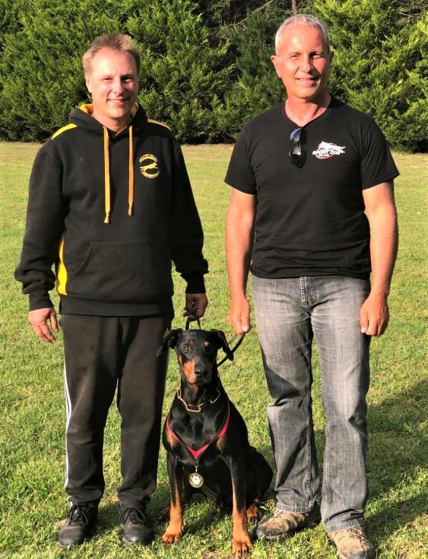
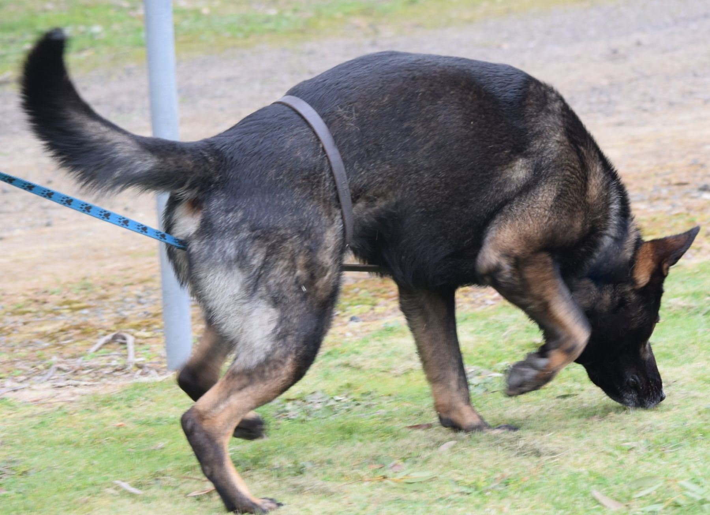
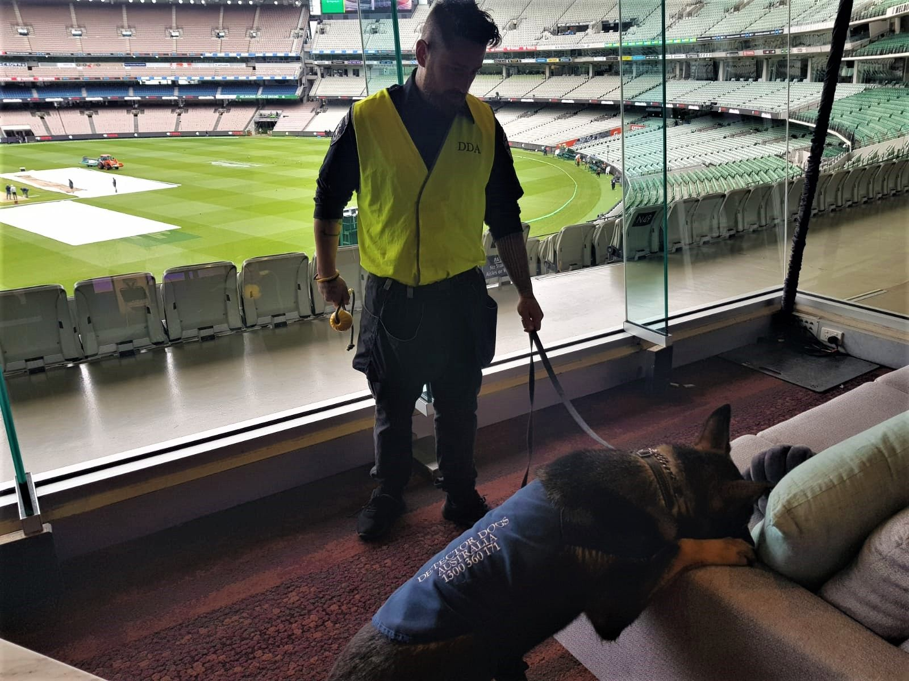
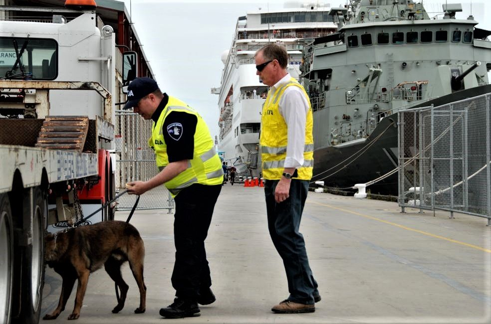
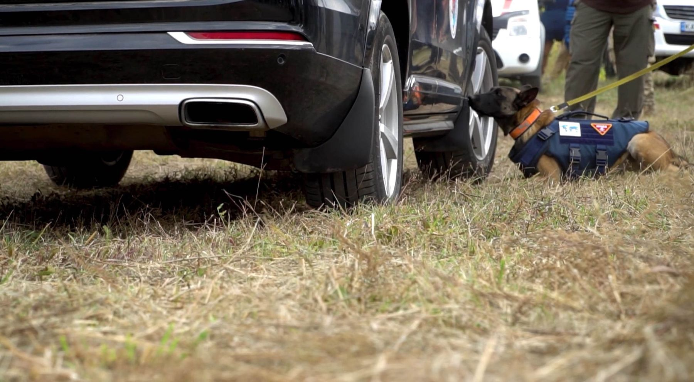
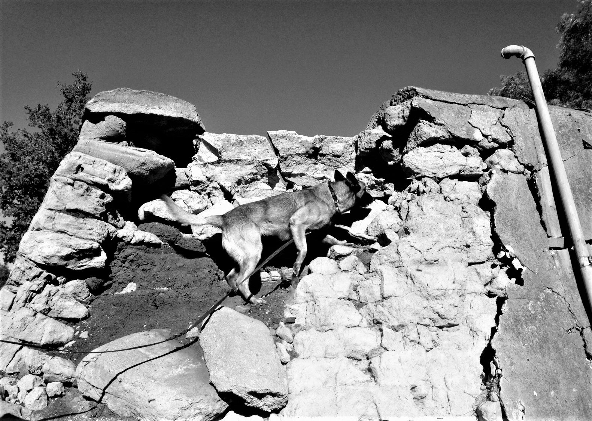
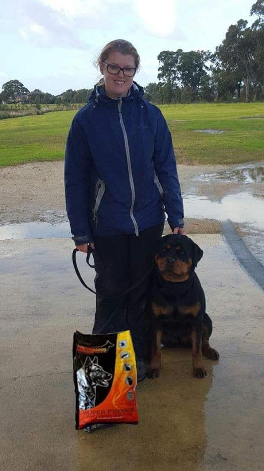
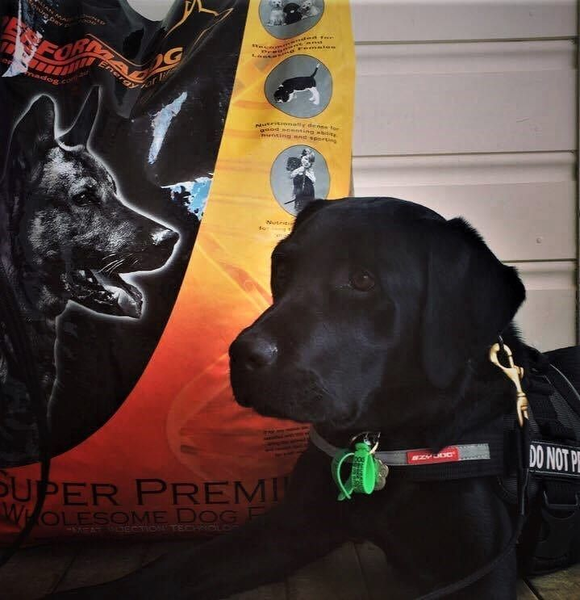

Dobermann · IGP 3
Caesar
Dr Michael Kern · video to film
“We have recently accomplished the highest working dog title in a competition and Performadog has been an essential part of our success.”
Dr Michael Kern · Handler · Perth

01 · Start of track Detector Dogs Australia · est. 2000For 45 years Kris Kotsopoulos has bred and trained dogs that have to perform — detection, protection, sport. No food met his standard, so he built one with animal nutritionist Bill Wiadrowski.
Your dog's job
Rated 9/10 by Petfood Reviews · 43 handlers, breeders & owners on record
File 01 · Origin
Training wasn't enough. That sent Kris into genetics and breeding in 1982. Decades on, he'd learned two things make a performance dog: breeding and nutrition.
When his sponsor's food changed and his dogs lost condition, he stopped looking for the right food and built it.
Read the full file →1980
First Dobermann. Starts training dogs.
1982
Starts breeding under the Von Forell name.
2000
Founds Detector Dogs Australia.
2003
Von Forell Vilco wins the National Australian Schutzhund Championship. NDTF life member.
2015
Performadog trials begin in the Von Forell kennel.
2018
Nutritionist Bill Wiadrowski joins.




Where Kris's detection teams work: the MCG, the Port of Melbourne, hospitals, major events. Kris: confirm which of these dogs are Von Forell-bred / Performadog-fed
File 02 · The formula
Formulated with Bill Wiadrowski, animal nutritionist since 1986. 97.2% Australian ingredients. Real meat first. Every price per day below is worked out from the feeding table printed on the bag.
PD-01
Working & sport

32%
Protein · 22% fat
High protein and fat for dogs that train, track, work and compete. Turkey and lamb, no grains, no chicken.
PD-02
Sensitive gut & skin

22%
Protein · 14% fat
Wild-caught tuna and lamb for dogs with allergies, itchy skin or a touchy stomach. No chicken.
PD-03
Growth

29%
Protein · 18% fat
Chicken-free growth food for brain, bone and lean muscle. What Von Forell litters are raised on.
Purple Boost · purple carrot, 9-strain probiotic and prebiotic topper. Add it to any bowl.
See Purple Boost →File 03 · Evidence
One working dog. The same blood panel, twelve months apart, on nothing but Performadog. Every number published — and labelled for what it is: one dog's results.
Read the full reportHaematology & biochemistry
[Lab] · [Date 1] → [Date 2]
| Marker | Ref. range | Before | After 12 mo |
|---|---|---|---|
| Haemoglobin (g/L) | — | — | — |
| Red cell count (×10¹²/L) | — | — | — |
| Packed cell volume (%) | — | — | — |
| White cell count (×10⁹/L) | — | — | — |
| Neutrophils (×10⁹/L) | — | — | — |
| Total protein (g/L) | — | — | — |
| Albumin (g/L) | — | — | — |
| ALT (U/L) | — | — | — |
Figures go in from the two lab reports. One dog's documented results — individual results vary.
File 04 · The dogs

Dobermann · IGP 3
Caesar
Dr Michael Kern · video to film
“We have recently accomplished the highest working dog title in a competition and Performadog has been an essential part of our success.”
Dr Michael Kern · Handler · Perth

Rottweiler · 20 km endurance
Rolex
Allgemein Rottweilers · video to film
“Our 2 year old female 'Swift' and 3 year old male 'Rolex' passed their Endurance Test… To quote our vet 'Rolex is as muscled as a Greyhound.'”
Allgemein Rottweilers · Breeders · Melbourne

Labrador · medical alert
Koda
Derek Wilson · video to film
“We constantly get remarks on how good Koda looks and the shine of her coat.”
Derek Wilson · Detection dog handler · Melbourne
File 05 · The difference
| Performadog | Typical supermarket premium | |
|---|---|---|
| Built for | Working dogs first — fed in the Von Forell kennel since 2015 | The average pet |
| Who formulated it | Bill Wiadrowski, animal nutritionist since 1986 | Usually unnamed |
| Where it comes from | 97.2% Australian ingredients · Australian made & owned | Often imported |
| First ingredient | Turkey, lamb or wild-caught tuna | Often meat meal or by-products |
| Preserved with | Vitamin E and rosemary oil | Varies |
| Results on record | Published lab panel + 43 named owners | Rarely published |
Next step
Free metro delivery over $150 · subscribe, skip or cancel anytime · palatability guarantee